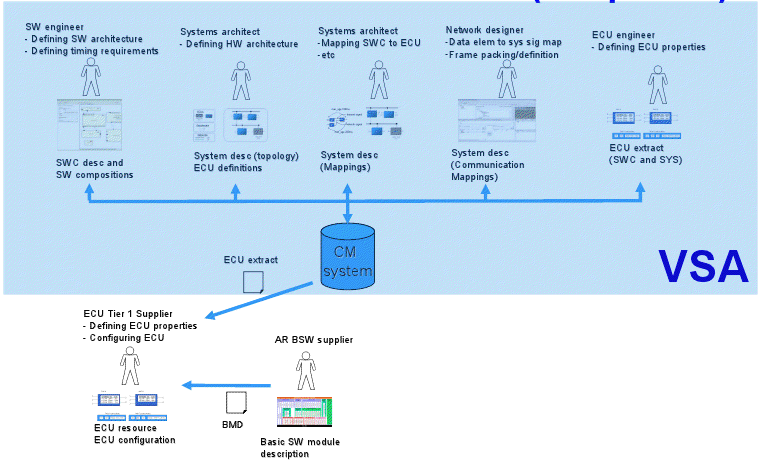
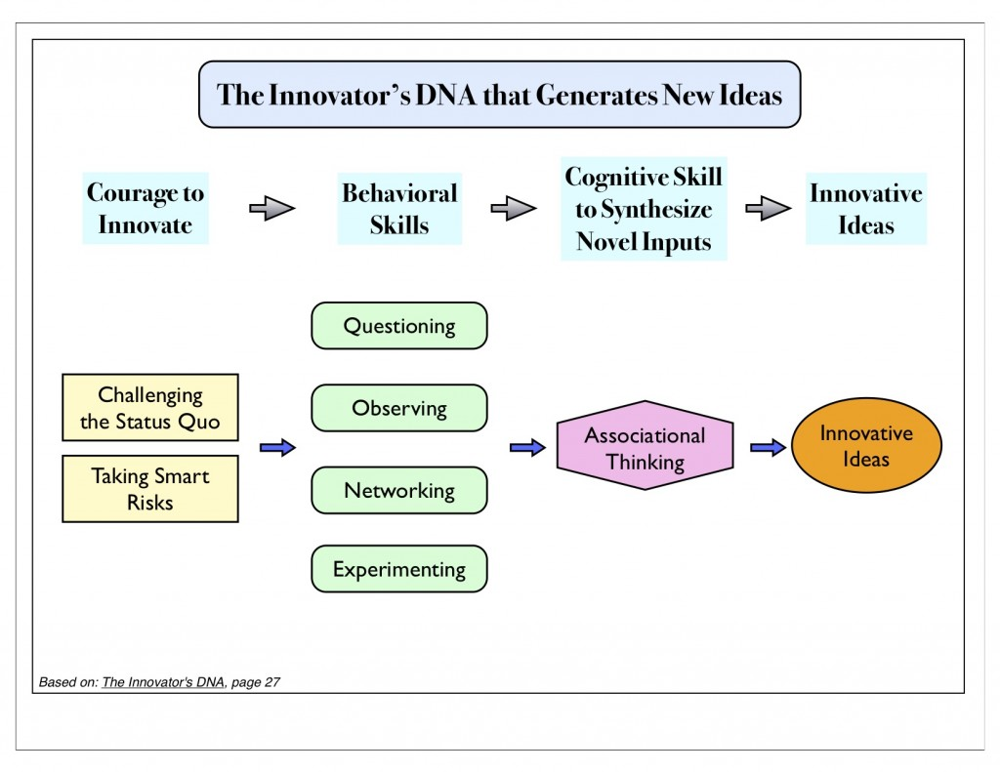
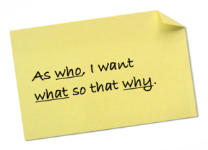
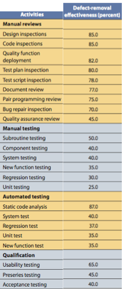

Automóvel como Plataforma
AutoEmbedded
Equipe
- Stakeholders
Board da MotorBras (CEO, Laboratorio de Inovações)
- Equipe
- Arquiteto de Software Embarcados (2)
- Engenheiro de Hardware (1)
- Engenheiro de Software (6)
- QA (outsourced)
Equipe

[Volcano VSx Tool-set Overview]Equipe

Requisitos
(Essential Scrum, K. Rubin)
- Identificar as User Stories
- Escrever os testes de aceitação
- Documentar os casos de uso (UML)
Design
Diagramas UML
- Pacotes
- Componentes

Construção

Construção
- Plataforma: AUTOSAR (Autosar Tool Platform)
- Definir componentes
- Geração de códigos
- Linguagem: C e Java
- Padrões: Specification of C Implementation Rules [AUTOSAR 190]
- Testes:
- Arunit (Unitário)
- Volcano VSx (Integração)
Teste
Atividades de Teste em ordem de efetividade em sistemas embarcados [EMBEDDED SOFTWARE: FACTS, FIGURES, AND FUTURE - IEEE computer society]
Manutenção
- Inclusão de componentes com funções "auto-testáveis" (self-test, self-optimization): V&V restrita a configuração
- Atualização do display e conector móvel via USB

Processo
Engenharia de Software 100% Agil
- FDD → Requisitos de Software e Arquitetura
- SCRUM → Gestão do Projeto
- XP → Desenvolvimento do Projeto
Processo
Requisitos de Software
A FDD (Feature Driven Development) é um processo de desenvolvimento de software iterativo e incremental.
- Develop Overall Model (Desenvolver um Modelo Abrangente)
O projeto começa com um passo a passo de alto nível do escopo do sistema e seu contexto.
- Build Feature List (Contruir a Lista de Funcionalidades)
O conhecimento que foi colhido durante a modelagem inicial é utilizado para identificar uma lista de funcionalidades.
- Plan by Feature (Planejar por Funcionalidade)
Depois da lista de funcionalidades concluída, o próximo passo é produzir o plano de desenvolvimento.
- Design by Feature (Detalhar por Funcionalidade)
Construir o Diagrama de Pacotes.
- Build by Feature (Construir por Funcionalidade)
Depois de uma inspeção no projeto, uma atividade por funcionalidade focada no valor para o cliente é produzido.
Processo
Gestão do Projeto
Scrum é um framework estruturado para apoiar o desenvolvimento de produtos complexos. Scrum consiste em equipes Scrum e suas funções associadas, eventos, artefatos e regras. [The Scrum Guide, 2011]

[imagem em http://en.wikipedia.org/wiki/Scrum_(development)]
Scrum
Scrum Team
- Product Owner
- Expressa claramente os itens do Product Backlog
- Ordenando os itens do Product Backlog para melhor atingir os objetivos
- Garantir o valor do trabalho que a equipe de desenvolvimento realiza
- Development Team
- São auto-organizados.
- Scrum não reconhece títulos
- Pode ter especialitas, mas as responsabilidades pertencem à equipe
- A equipe não têm sub-equipes dedicadas a áreas particulares como testes
- Scrum Master
- Ser um lider
- Remover impedimentos
- Garantir as práticas Scrum
- Passar as visões, objetivos e os items do Product Backlog para a equipe
Scrum
Scrum Events...
- Sprint
O coração do Scrum é o Sprint, um time-box de um mês ou menos durante no qual um "Concluído", utilizável, e incremento do produto potencialmente entregável é criado.
- Sprint Planning Meeting
O trabalho a ser realizado no Sprint é planejado na Sprint Planning Meeting. Este plano é criado pelo trabalho colaborativo do Scrum Team.
- Daily Scrum
O Daily Scrum é um evento de 15 minutos para a equipe de desenvolvimento sincronizar atividades e criar um plano para as próximas 24 horas.
Scrum
...Scrum Events
- Sprint Review
A Sprint Review é realizada no final da Sprint para inspecionar e adaptar o Product Backlog se necessário. Durante a Sprint Review, o Scrum Team e as partes interessadas colaboram sobre o que foi feito na Sprint.
- Sprint Retrospective
A Sprint Retrospective é uma oportunidade para o Scrum Team rever o que aconteceu e criar um plano de melhorias para o próximo Sprint.
Processo
Desenvolvimento do Projeto
O XP (eXtreming Programming) é um método ágil para o processo de desenvolvimento de software.
- Planning Game
Usado para pontuar as User Stories na Sprint Planning Meeting
- Pair Programming
Para que o conhecimento seja distribuido melhor entre a equipe e melhor qualidade do código
- Coding Standards
Regras estabelecidas para organizar e contruir o código fonte
- Refactoring
Processo que permite melhoria continua no código já existente
- TDD
Testes primeiro, código depois
Ferramentas
- MathWorks Simulink
Importa o XML criado pelo AUTOSAR e executar o teste para o componente
- Volcano VSx
Configurar e projetar (VSA), teste de integracao (VST), debuger e profiling (VSI) no AUTOSAR
- ADP (Autosar based dev platform) com CDT
IDE [Enabling AUTOSAR system design using Eclipse-based tooling - BMW CarIT]
- GitHub (https://github.com)
Para controle de versão, armazenamento dos projetos e bugtracking